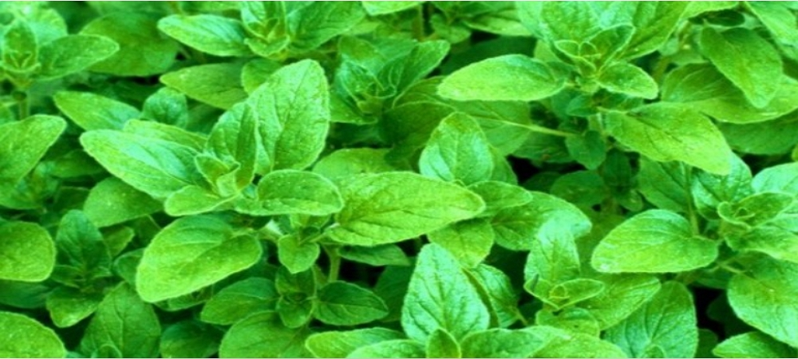

LJEKOVITE BILJKE PROTIV ASTME
Simptome ovog poremećaja moguće je kontrolisati promjenom ishrane i životnog stila, medikamentima ali i pomoću biljnih preparataLjekovito bilje, April 11, 2021
Tačan uzrok astme nije poznat, ali je utvrđeno da određeni faktori - genetika, postojeće alergijsko stanje, gojaznost i prekomjerno pušenje - mogu povećati šanse za razvoj bolesti. Uobičajeni simptomi astme su karakteristično "zviždanje" (naročito pri izdisanju), kašalj, kratak dah, stezanje u grudima i otežano disanje. Mogu biti umjereni, ali i veoma intenzivni, čak opasni po život. Simptome ovog poremećaja moguće je kontrolisati promjenom ishrane i životnog stila, medikamentima, ali i pomoću biljnih preparata.
Origano
Origano se zbog svojih antiupalnih i antibakterijskih svojstava od davnina koristi u liječenju mnogih bolesti. Sadrži ruzmarinsku kiselinu, karvakrol, flavonoide i terpene - supstance koje efikasno čiste pluća, smanjuju upalu respiratornog trakta i bronhijalnih cijevi te ublažavaju simptome astme. Osobe koje pate od ove bolesti treba da piju dvije do tri šolje čaja od origana, koji se pravi jednostavno: tri kašičice svježe ili sušene biljke preliti šoljom vrele vode, ostaviti da stoji pet do 10 minuta, procijediti i po želji zasladiti medom.
Sladić
Slatki korijen ili sladić već se vijekovim upotrebljava za liječenje oboljenje respiratornog trakta. Također je efikasan u tretmanima astme jer djeluje antiinflamatorno, ublažava upalu bronhijalnih cijevi, čisti disajne puteve i olakšava disanje. Pored toga, ova biljka se dolikuje i imonostimulativnim osobinama. Napomena: sladić je veoma jak biljni lijek i treba ga koristiti pažljivo jer može izazvati glavobolju i porast krvnog pritiska. Ne smiju ga uzimati dijabetičari, hipertoničari kao ni osobe koje imaju problema s nadbubrežnom žlijezdom, jetrom i bubrezima.
Kopriva
Čajevi i drugi preparati od koprive veoma su djelotvorni u liječenju alergijske astme. Ta moćna biljka sadrži prirodne antihistaminike i djeluje protivupalno, te pomaže otvaranju bronhijalnih i nazalnih puteva ublažavajući simptome astme. Sem toga, u njen sastav ulazi i buterna kiselina - važna za održavanje zdravlja imunološkog sistema i metabolizma. da bi olakšali tegobe koje prate ovu bolest, oboljeli od astme treba nekoliko puta na dan da piju čaj od koprive koji se pravi na sljedeći način: kašik suhog korijena ili lišće preliti šoljom vrele vode, poklopiti, ostaviti da stoji pet minuta i zasladiti medom.